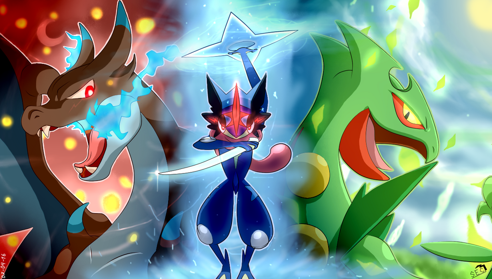
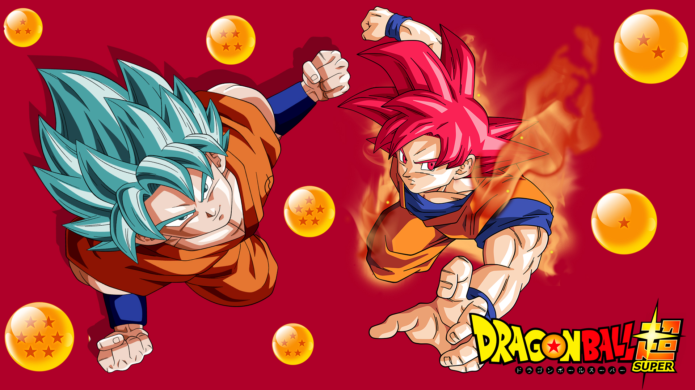
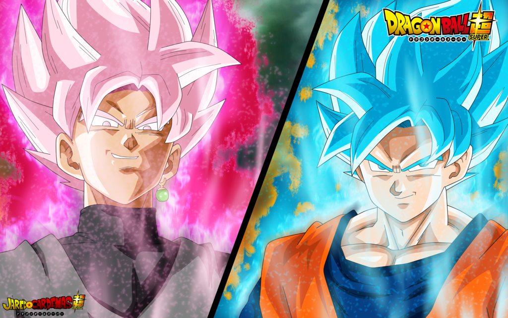
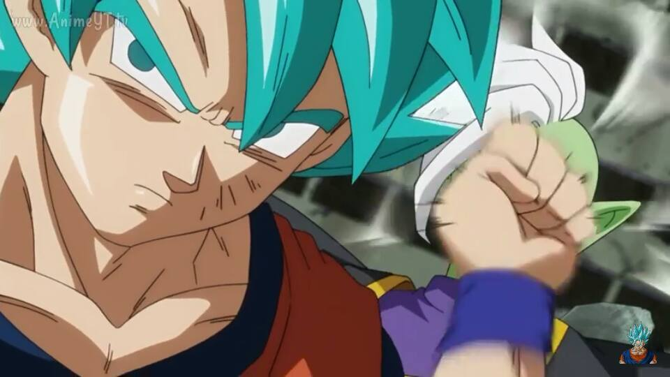
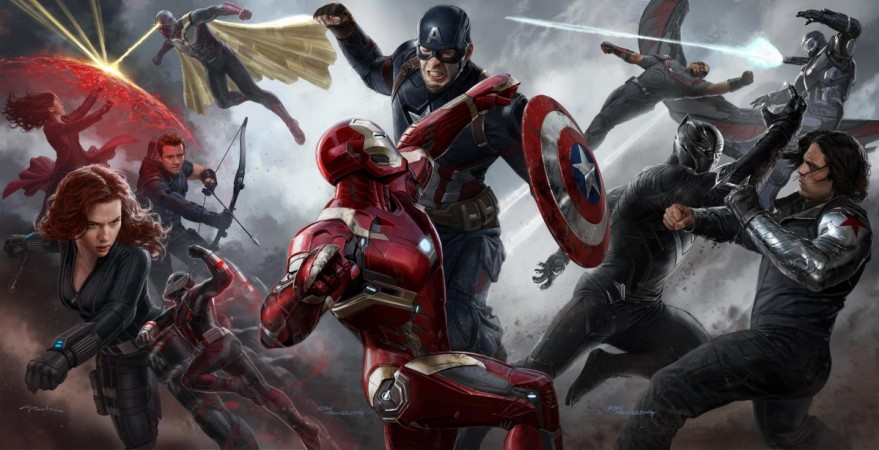

Luego de una campaña perfecta, con equipo con evoluciones a tope y un pokemon con una evolución extraña, Ash Ketchup, ahora conocido como el mostaza, cae en la final contra Alan desafiando las leyes de la fisica.
Un ataque "sofoco" tipo fuego fue mas eficaz que un mega "shuriken" de agua...lógica? Jamás sabremos el porqué..
Al medio, Greninja de Ash, el único pokemon inicial del protagonista en alcanzar su máxima evolución.
Luego de las películas "La Batalla de los Dioses" y "La Resurrección de Freezer", en la serie Dragon Ball Super se confirma las fases Dios de Gokú y Vegeta.
Se deja a la imaginación lo que podría ocurrir sabiendo que Toei Animation tiene confirmado 100 episodios y solo van en el 62.
A la izquierda Goku ssj God Blue, a la derecha Goku ssj God.
La aparición de Black y su transformación de ssj God Rose, nos pone a pensar que el poder de tanto Goku como Vegeta aumentará en próximos capítulos.
Aguante Dragon Bal Super vieja!.
Cuando aquella mujer que te gusta te deja en la friendzone.
Un golpe del que JAMÁS te recuperarás!
Taxi v/s Uber, Estales v/s Privadas, PC v/s UDI, Goku v/s Zamasu...todo se resume Team Capitan America v/s Team Iron Man.
Aunque la batalla dista mucho del comic, sigue siendo un gran acierto de Marvel.
Siempre mejor Team Iron Man.
Feel free to email us to provide some feedback on our templates, give us suggestions for new templates and themes, or to just say hello!